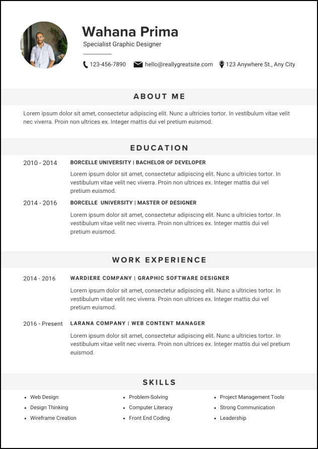

Choose The Template

Black and White CV
簡潔大氣，適合金融、法律、傳統行業

Grey Modern CV
極簡設計感，適合創意、設計、科技公司

Beige Brown Blue CV
溫暖優雅，適合教育、市場營銷、客戶服務
請先選擇一個模板
簡潔大氣，適合金融、法律、傳統行業
極簡設計感，適合創意、設計、科技公司
溫暖優雅，適合教育、市場營銷、客戶服務
請先選擇一個模板